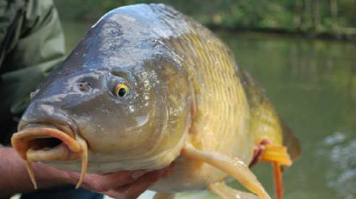
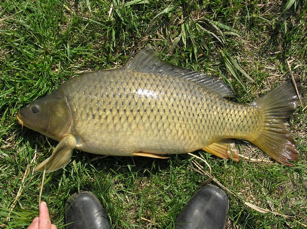
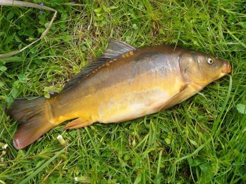
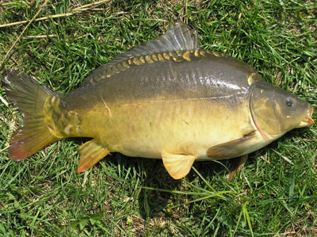

Опис, будова, характеристика
Короп золотистий являє собою досить таки велику рибу коричневого або жовто-зеленого кольору. Втім, коропи, в залежності від місць проживання, можуть мати й інші кольори. Тіло коропа видовжене і вкрите золотавою лускою, хоча є і види коропів без луски.
Голова коропа велика, а рот висувний. Спинний плавець досить довгий до того ж він має невелику виїмку, а анальний плавець у коропа навпаки короткий. В обох плавцях є зазубрений колючий промінь. Боки риби, як правило, золотистого кольору, а спинка темна.

Тривалість життя
Скільки живе короп? Тривалість життя коропа в природних умовах в середньому становить 20-30 років.
Місцепроживання
Де мешкає короп? Коропи живуть практичних у всіх прісноводних водоймах Європи, Азії, Північної Америки. Але
так як ця риба досить теплолюбна, то її немає на півночі Європи, Азії та Америки, а ось в помірній смузі
коропів живе предостатньо.
В якості місць проживання ці риби воліють великі озера, і повноводні річки з
повільною течією та в міру замуленим дном.
Харчування
Чим харчується короп? За час свого життя коропи здатні набирати вагу до 50 кг, і такому великому їх зросту сприяє, як всеїдність цієї риби, так і особливий «безшлунковий» устрій їх травної системи, тобто в сприятливих умовах короп їсть практично «нон стоп». Така особливість цієї риби змушує деколи жартома порівнювати коропа зі свинею, досвідчені рибалки відмінно знають, що коропи постійно риються в мулі в пошуках їжі, точно як свинки риються в багнюці. Самим коропам це грає не на користь, так як такою своєю поведінкою вони видають свою присутність великими (близько 10 см в діаметрі) бульбашками.Що ж стосується їжі, яку вживає короп то це і рачки, і мікроорганізми, і пуголовки і жаби, і навіть мальки власного виду (так, у коропів є канібалізм). Причому більш дрібні коропи для вдалого полювання збиваються в зграї, а старі особини віддають перевагу вести одиночний спосіб життя. >
Види, фото та назви
Існує безліч підвидів коропа, в особливості декоративних, але всі вони входять в три основних види.
- Короп лускатий
- Короп дзеркальний
- Короп голий
Короп лускатий
Тіло цього коропа повністю вкрите лускою. Цей вид коропа відмінно пристосовується до різних умов існування, приживається, як у дрібних та закритих водоймах, так і глибоководних кар’єрах.
Короп дзеркальний
Цей вид відрізняється від попереднього тим, що його тулуб вкритий великими лусочками, які розташовані вздовж спинного плавця. Також дзеркальний короп більш вибагливий у харчуванні, особливо йому смакують молюски та злаки. Мешкає переважно на мілководді, але в разі небезпеки тікає на глибину.
Короп голий
Цей короп цілком виправдовує свою назву, так як зовсім не має луски. Втім, у деяких особин можна зустріти окремі лусочки в області хвоста, біля зябер і спинних плавників.
Лов
Так як короп риба наскільки сильна, так і обережна, то для її успішної ловлі необхідно знати багато нюансів, як то:
- особливості поведінки коропа в різний час року,
- характеристики водойми, де мешкає короп,
- найбільш ефективні насадки для лову коропа,
- особливості приготування прикормки, здатної заманити рибу.
Кращий час для лову коропа – весна, так як зголодніла за зиму риба починає виявляти активність. Особливо після ікрометання, голодна риба, втрачаючи притаманну їй обережність, буде вестись практично на будь-яку наживку. Втім, ловити коропа можна і в інший час року, але результат може бути не настільки ефективним, особливо при перепадах погоди короп може ховатися на дні і гарного улову очікувати не доводиться. >
Цікаві факти
- М’ясо цієї риби корисне для людини, завдяки своїй низькій калорійності, вмісту вітамінів та мікроелементів.
- Низькокалорійне м’ясо коропа включається в дієти при цукровому діабеті і захворюваннях органів травлення.
Відео
І на завершення цікаве відео про особливості ловлі коропа.